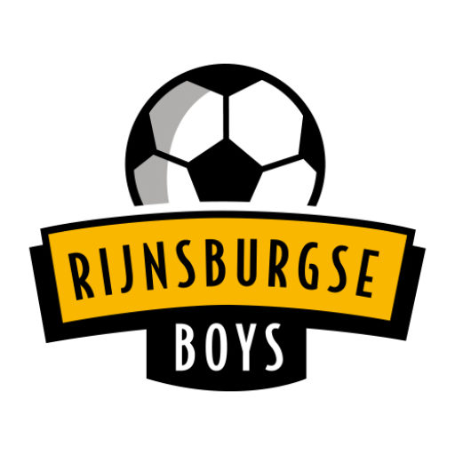
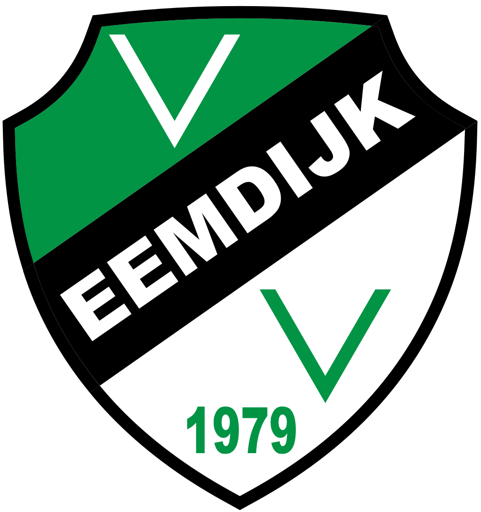
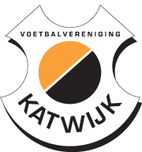
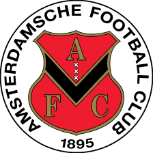
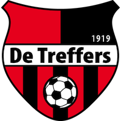
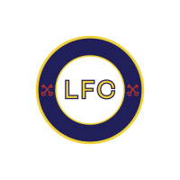

Op 15 augustus begint het avontuur in de derde divisie B. Daarvoor werkt Noordwijk 1 een sterk oefenprogramma af tegen onder meer vv Katwijk en De Treffers.

Rijnsburgse Boys
vv Eemdijk – vv Noordwijk (uit) 14.30 uur
vv Katwijk – vv Noordwijk (uit) 20.00 uur
AFC Amsterdam – vv Noordwijk (uit) 12.00 uur
vv Noordwijk – De Treffers (thuis) 14.30 uur
vv Noordwijk – LFC Leiden (thuis) 19.30 uurLeden van vv Noordwijk, donateurs en seizoenkaarthouders hebben op vertoon van hun digitale ledenpas recht op een gratis staanplaats bij competitiewedstrijden van Noordwijk 1. Niet-leden kopen vooraf online een kaart of scannen op de wedstrijddag de QR-code bij de ingang.
| Losse kaarten | |
|---|---|
| Staanplaats · jeugd (t/m 18) en 65+ | € 7 |
| Staanplaats · volwassenen | € 9 |
| Tribune · jeugd (t/m 18) en 65+ | € 10 |
| Tribune · volwassenen | € 13 |
Met een seizoenkaart bezoek je alle 17 competitiewedstrijden plus eventuele beker- en nacompetitiewedstrijden — en je hoeft nooit meer een los kaartje te kopen. Rekenvoorbeeld: 17× staan (jeugd/65+) kost los € 119, met een seizoenkaart € 90.
| Seizoenkaarten | |
|---|---|
| Staan · jeugd (t/m 18) en 65+ | € 90 |
| Staan · volwassenen | € 105 |
| Tribune · jeugd (t/m 18) en 65+ | € 125 |
| Tribune · volwassenen | € 140 |
Alle thuiswedstrijden van Noordwijk 1 worden gespeeld op veld 1 van Sportpark Duinwetering in Noordwijk aan Zee, op loopafstand van de duinen.
Kaarten koop je vooraf via de website of op de wedstrijddag via de QR-code bij de ingang. Je ticket wordt gescand op je telefoon. In de kantine kan in geval van nood ook, alleen met pin.
Voor, tijdens en na de wedstrijd ben je welkom in de kantine en het sportcafé. Derde helft inbegrepen — zo hoort dat bij de roodwitte familie.
Steun Noordwijk 1 vanaf de tribune, seizoen 2026–2027 in de derde divisie B.
Regel je tickets